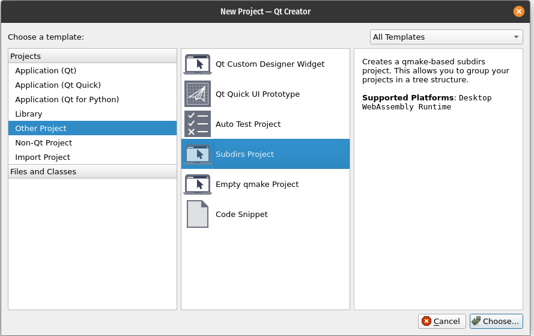

Setting up a Testable QML Project
Setting up a QT Project that makes it easy to use QML TestCase is a bit different from just using a normal QML Project and then adding tests. QML TestCase requires a TestRunner defined in C++ that will run all of the QML tests. This TestRunner also must be the entry point of its project which can cause issues if you want to manually test your Components, or just want to keep your testing seperated out from your main application logic.
I have found that an easy solution is to use the QT Subdirs Project and defining an application project, and a Test Runner Project.
Setting Up a SubDirs Project.
- In QT Creator create a new project
- Under Other Projects select SubDirs Project 
- Define your Project Name
- Define the Kits that you wish to use.
- After you finish setting up the main SubDirs project it will prompt you to add a sub-project. Select yes. This will be the main application.
- Define the main applications project name.
- Define the kits.
- Once you have finished you will now see the application as a subproject.
- Now we can add in the Test Runner project.
- Right click on the parent Project and select Add New Subproject.
- Next I usually select another QML Quick application as the project type. Selecting the QML Quick Application will create a .pro file with all of our main requirements. It does however also include some extra files that aren't nessiary
- Continue through the rest of our dialogs to finish creating our test runner project.
You should now have two projects visible in QT Creator, and we can now make our TestRunner project to actually run tests.
Setting Up TestRunner Project
- First we need to add qmltestcase into the .pro file under our TestRunner Project
-
Next edit the main.cpp to contain:
#include <QtQuickTest> QUICK_TEST_MAIN(example) -
From here you should be able to right click on the Test Runner Project and run it. The application output should be similar to:
The directory '/.../ToDo_TestRunner' does not contain any test files matching 'tst_*.qml'The TestRunner is going to search its directory for any tst_*.qml files and then run the TestCase Components in those files.
-
Since we are using two seperate subprojects we will need to tell the TestRunner where to look for the tst_*.qml files.
#include <QtQuickTest> #define QUICK_TEST_SOURCE_DIR "../../QMLTesting/ToDo/" QUICK_TEST_MAIN(example)If you are using a relative path to define the
QUICK_TEST_SOURCE_DIRmake sure to remember that the path is starting from where the TestRunner Executable is being built and run, not were the source code is stored. -
Now in the main application add a QML file named tst_test.qml. This will allow for our test runner to find this empty test file.
CONFIG += c++11 qmltestcase